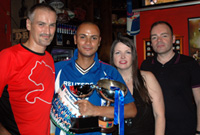
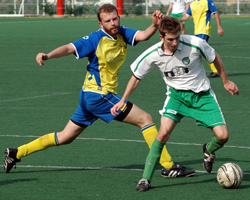

OLD STORIES - June 2007
GAME OVER.... for now.
|  |
Friday, 29th June, Legends Sports Bar Roppongi,
Whether drowning sorrows or celebrating victories there was certainly a lot of booze flowing at the Tokyo Metropolis League's end-of-season BBQ Party and Award Ceremony, attended by more than 250 of the leagues faithfuls - including some notable TML & Footy Japan sponsors/supporters: Mark & Mary Devlin from Metropolis, Nick Johnston from Wall Street Associates, Gregory Glanzmann from BMW, Yuji from Footnik (soon to be opening in Osaki) and James Oakes from new supporters Gaba - who we'd like to thank for coming along presenting awards and generally putting up with a bunch of roudy, pissed-up lads. more ...
FJ.
Shane Shock BEFC in FJ Plate Final
 |
Hachioji Park, Sunday 17th June,
Some may have thought a match between BEFC & Shane FC, opposite ends of the table, 30 points separating them, would be a forgone conclusion. But that's the beauty of the Cup (plate in this instance), where upsets are always on the cards.
Well as seen last week in the FJ Cup final, one team just seemed to want it more and so it was that Shane FC pulled one out of the bag to beat BEFC 4-2 on penalties after tying 1-1 in regulation and over time.
Shane top scorer Giles Mitchell, playing goalie in the 2nd half, turned hero when he saved 2 of BEFC's 4 spot kicks in the resulting PK shoot-out.
Departing Captain Matt Colcaveccia was overjoyed to lead out his team on his final match, to a monumental victory More ...
FJ.
Over But Not Out!
|  |
Hachioji Park, Sunday 17th June,
Last game and barring an absolute freak thrashing (cup game aside) this game would see the Celts stay up in TML 1 next season. On a scorching hot surface Celts and Geckoes resumed after the washed out previous game.
Geckoes came into the game safe in division 1 and showing off some shiny new silverware. But it was the Celts who started brightly with some crisp passing and confident play. Yet good things rarely last especially for us and somewhat against the run of play a quick break by Geckoes allowed their centre forward to get in behind the back four, nip in front of Aki and finish well.
It could have got far worse as a very similar opportunity quickly followed but Aki stood up well. The tought of an 8-0 defeat never entered the mind! more ...
GD.
Geckoes Win FJ Cup in Rousing Style
 |
Misato, Saturday 9th June, The Geckoes proved it was no fluke them being in the final of the FJ Cup, by beating Sala 2-1 at Misato on Saturday afternoon. Many had said their victory over BFC in the semis was a mere stroke of luck, but according to 'Rob Manager' it was all a cuning ploy to get some silverware
The pitch may have left something to be desired but the Geckoes were well up for the task, bringing out lots of fans decked out in WSG Yellow tops and copious amounts of beer in preparation for what turned out to be a famous victory for the WallStreet boys. The noise from the bleachers* (read single bench in the middle of no where) could be heard across the plains of Saitama (even if you couldn't understand a word of it!) more ...
FJ.
TML Stars Shine in Asia
 |
S.E. Asia, May/June, Not for the first time this year, TML players took to the skies to play in various 7's tournaments in South East Asia, achieving some great results. Kirk of Swiss Kickers took an all star squad to the prestigious Hong Kong 7's only losing to an ex-pro team in the semi-finals of the Masters tournament. On the way there, they beat Southhampton veterans with the likes of Matt LeTissier 5-0, doing themselves proud more ...
The following weekend, league maestro, Sid, went to Bangkok to join Cosmos FC in the BCCT/Tesco Bangkok 7's. Having reached the semi-finals, he played against and beat his Liverpool FC heroes, Ian Rush & John Barnes amongst others! which only left the mighty Vikings to play aganst in the finals more ...
FJ.
Geckoes Stay Up at France's Expense
Hachioji Park, Sunday 3rd June, The Geckoes faced France in a relegation decider at Hachioji Park on Sunday afternoon. With the Celts losing to already relegated Jetro in the game before, it meant that the Geckoes needed two points from their remaining two games to clinch safety, for the French it was simply a must win.
more ...
RM.